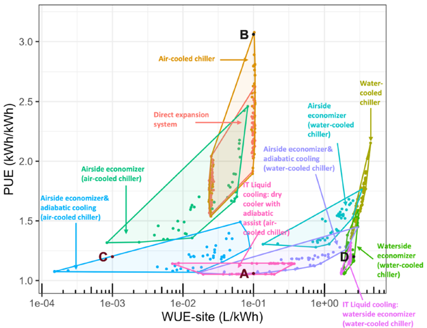

Sep 09, 2026 | 1410 words | 14 min read
6.3.1. EX: Linear Data and Regression#
Cooling buildings and high-performance electronic systems is important for protecting equipment and maintaining reliable operation. Modern data centers generate concentrated waste heat because of continuous, high-density workloads (Mihelcic & Zimmermann, 2021; Lei et al., 2025).
Engineers must choose how to remove this heat. Air-cooled systems use more electricity but do not consume local water resources. Water-cooled systems use less electricity but require local water withdrawals for evaporative cooling (Lei et al., 2025).
In this assignment, you will use linear regression to examine the relationships between data center power demand, cooling energy consumption, and water consumption for different cooling technologies.
Water Use and Water Consumption#
Water use is the total amount of water withdrawn from a source. Water consumption is the portion of that water that is not returned to the original source. Evaporation and water incorporated into products or plants are examples of water consumption (World Resources Institute, 2026).
Water Use Effectiveness (WUE) is a performance indicator used to track water consumption at data centers (International Organization for Standardization, 2026).
Required Files#
Download the
assignment template. Save the file as 6.3.1_datacenters_username.xlsx. The template contains the data table and calculation tables.Download the
report templateand save it as 6.3.1_report_username.pdf. Use this report for your charts and answers to the analysis questions.
Quick Guide: Completing & Submitting Your Report
To complete your technical report, you must edit the provided Word template (.docx) and convert it to a PDF for final grading. Follow this simplified workflow:
Edit in Word: Download and open the
.docxtemplate in Microsoft Word. Avoid editing in web previewers or Google Docs, as they will corrupt your formulas and chart formatting.Save as PDF Only When Finished: Type your answers and copy any charts or images directly into the Word document, saving your progress frequently. Once your report is 100% complete, save or export the document as a PDF. (Do not convert to PDF early, as PDFs are static and cannot be edited!) Copy charts or images into the report and keep the originals in the workbook, since Gradescope grades the workbook.
Submit to Gradescope: Upload your finalized PDF and any other required deliverables to the corresponding assignment in Gradescope. Always review your uploaded files from the Gradescope confirmation screen to verify your work is complete.
Reminder
Rename your files with your Purdue username, replacing “template” in each filename. Complete all required fields in the templates. Include your name and email address.
Part A: Power and Water Use in Data Centers#
Background#
Data centers use cooling systems to remove heat from high-performance electronic equipment. Air-cooled and water-cooled systems make different demands on electricity and local water resources.

Fig. 6.3 This figure shows the tradeoff between Power Usage Effectiveness (PUE) and Water Usage Effectiveness (WUE) for data center cooling technologies (Lei et al., 2025).#
Your engineering team has compiled data for air-cooled and water-cooled data centers in
the Energy_vs_Water_Tradeoffs tab of the Excel template.
The raw data table in Columns A to D contains the following headers:
Data Center Location
Cooling Technology Type (Air-Cooled or Water-Cooled)
Total Power Demand [MW] (the independent variable, \(X\))
Daily Cooling Energy Consumption [kWh] (the dependent variable, \(Y\))
Tasks#
Perform the following steps on the Energy_vs_Water_Tradeoffs worksheet.
Sort the data by
Cooling Technology Type. Set the order toA to Zso that Air-Cooled appears before Water-Cooled.Use Excel built-in functions
=SLOPE()and=INTERCEPT()to calculate the slope and y-intercept for both data series.Create a single scatter plot with Air-Cooled and Water-Cooled as separate data series. Use a different marker shape and color for each series.
Add a linear regression trendline to each data series. Display the regression equation and the \(R^2\) value for each trendline on the plot. Compare the displayed values for slope and y-intercept with the values in Table 1.
Format the chart for professional engineering communication. Add a descriptive title, label both axes with units in square brackets, and include a clear legend.
Use
=IF()in Column E, Predicted Daily Cooling Energy [kWh], to apply the appropriate regression equation for each row. If the row is Air-Cooled, use the Air-Cooled slope and intercept from Table 1; otherwise, use the Water-Cooled parameters. Use cell references so that you can copy the formula down the data table.Calculate the squared residual in the
Squared Residualcolumn. Use cell references and copy the formula down the data table.In Table 1, use Excel functions and cell references to calculate these metrics for each cooling technology:
Mean \(\overline{y}\), the average observed energy
\(SST\), the total sum of squares, using
=DEVSQ()\(SSE\), the sum of the squared residuals, using
=SUM()and the relevant cells in theSquared Residualcolumn\(R^2\), using \(R^2 = 1 - \frac{SSE}{SST}\)
Confirm that the calculated \(R^2\) values match the values displayed on the scatter plot to the displayed precision.
Answer all analysis questions in the Part A section of the report. Use complete sentences and reference specific data in your answers.
Part B: Water Consumption in Cooling Data Centers#
Background#
Water is commonly used to remove excess heat from buildings and industrial systems because it has a much higher heat capacity than air:
Specific Heat Capacity (\(c\)) of Water: \(4,184\text{ J/kg-}^\circ\text{C}\)
Specific Heat Capacity (\(c_p\)) of Dry Air: \(1,005\text{ J/kg-}^\circ\text{C}\) (at constant pressure)
In cooling systems, water at ambient temperature is circulated through heat exchangers of various designs. Heat transfers to the water and is carried away, often to cooling towers where much of the water is evaporated as the heat is transferred to the environment. In open-loop cooling, the water is discharged back to the environment along with the heat it is conveying.
If we know the temperature change (\(\Delta T\)) of a mass of water due to heat transfer, we can calculate the amount of thermal energy transferred to the water: $\(\Delta E = \text{mass} \cdot c \cdot \Delta T\)$
In engineered systems, heat loss is an indicator of energy use efficiency. Water Use Effectiveness (WUE, units: L/kWh) is a measure of water-cooling efficiency. By definition, WUE tracks consumed (evaporated) water, not just used (withdrawn) water.
Traditional cooling technology will have a cooling water temperature change of \(\Delta T \approx 6.5\text{ }^\circ\text{C}\). One approach to reducing cooling-water requirements is to allow a larger temperature rise in the cooling water, enabling the same amount of heat to be removed with a lower water flow rate. High-efficiency direct-to-chip cooling will have a water temperature change of \(\Delta T \approx 20.0\text{ }^\circ\text{C}\).
Your team has compiled data on the Water_Consumption tab of the template. A scatter plot is provided in the template. The plot shows Water Consumption \([m^3/d]\) versus Total Power Demand \([MW]\) for Traditional and Direct-to-Chip cooling systems. Each cooling technology is displayed as a separate data series. The trendlines use simplified linear regression models of the form \(y=mx\), with the y-intercept constrained to zero (\(b=0\)).
Tasks#
Use the information provided on the tab Water_Consumption of the template to answer the analysis questions in the Part B section of the report. No additional Excel calculations are required for Part B unless specified in the report. Use complete sentences and reference specific data or models in your answers.
Gradescope Submission#
Save Deliverables: Ensure all required assignment files are saved and named exactly as specified in the assignment instructions. If a template file name contains the word
template, replace only that word with your Purdue username. For example,3.1.2_powerdata_template.xlsxbecomes3.1.2_powerdata_jdoe.xlsx. When a task lists more than one deliverable, such as a workbook and a report, submit each deliverable to its own matching Gradescope assignment instead of combining them into one upload.Navigate to Gradescope: Log in to Gradescope. From your Dashboard, open the assignment.
Upload your work: Select the Upload submission method. Drag and drop all required files (or a compressed
.zipfolder) into Gradescope, and select Upload.Confirm Submission: When your upload is successful, you will see a confirmation message on your screen and receive an automated email receipt.
Add Team Members (if applicable): If this is a team assignment, add all team members to the submission. Each teammate should confirm they can see the submission in their own Gradescope account. For help, visit Gradescope’s documentation on adding team members.
Review Autograder Results: Wait a few minutes for the autograder to evaluate the relevant files. Scroll down to view any failed test cases. If you need assistance interpreting the output or errors, ask your teaching team.
Resubmit if Necessary: You can edit your files and select Resubmit as many times as you need before the assignment deadline. Only your final, active submission is graded. (Note: If you need to resubmit, you must upload all required files for the assignment again).
For a detailed walkthrough, review the official Gradescope Submission Guide.
References#
International Organization for Standardization. (2026). Information technology: Data centres: Key performance indicators: Part 9: Water Usage Effectiveness (WUE) (ISO/IEC Standard No. 30134-9:2026). https://www.iso.org
Lei, N., Lu, J., Shehabi, A., & Masanet, E. (2025). The water use of data center workloads: A review and assessment of key determinants. Resources, Conservation and Recycling, 219, Article 108310. https://doi.org/10.1016/j.resconrec.2025.108310
Mihelcic, J. R., & Zimmermann, J. B. (2021). Environmental engineering: Fundamentals, sustainability, design (3rd ed.). John Wiley & Sons.
World Resources Institute. (2026). Water use and water consumption definitions. https://www.wri.org